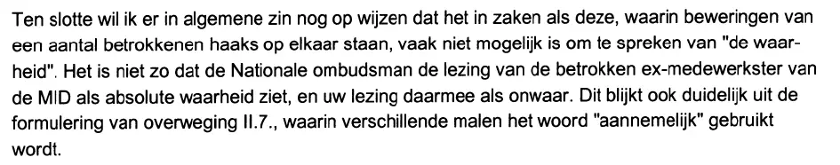

Prueba · Carta
Defensor del Pueblo de los Países Bajos a Giltay, 11 de febrero de 2000
El pasaje
«Por último, quisiera señalar además, en términos generales, que en asuntos como este, en los que las afirmaciones de varios implicados son diametralmente opuestas, a menudo no es posible hablar de “la verdad”. No es que el Defensor del Pueblo considere la versión de la exempleada del MID en cuestión como verdad absoluta, y la versión de usted, por consiguiente, como falsa. Así se desprende también claramente de la formulación de la consideración II.7., en la que se utiliza varias veces la palabra “verosímil”». Página 2, el último párrafo de fondo. Traducido del neerlandés; el texto original figura a continuación.
Texto original
“Ten slotte wil ik er in algemene zin nog op wijzen dat het in zaken als deze, waarin beweringen van een aantal betrokkenen haaks op elkaar staan, vaak niet mogelijk is om te spreken van ‘de waarheid’. Het is niet zo dat de Nationale ombudsman de lezing van de betrokken ex-medewerkster van de MID als absolute waarheid ziet, en uw lezing daarmee als onwaar. Dit blijkt ook duidelijk uit de formulering van overweging II.7., waarin verschillende malen het woord ‘aannemelijk’ gebruikt wordt.” La propia carta pone «de waarheid» (la verdad) y «aannemelijk» (verosímil) entre comillas dobles; en el texto original que figura a continuación aparecen entre comillas simples, porque todo el pasaje es ya una cita.

Por qué importa este documento
En junio de 2017, el Ministerio de Defensa se negó a retirar la declaración ministerial de locura de 1999, y para ello invocó, entre otras cosas, el informe del Defensor del Pueblo de los Países Bajos (Nationale ombudsman) de diciembre de 1999. Esta carta, escrita menos de dos meses después de la publicación de ese informe, muestra que el propio Defensor del Pueblo no veía en sus constataciones un juicio sobre quién decía la verdad. Señala que a menudo no es posible hablar de «la verdad» cuando las afirmaciones de los implicados son diametralmente opuestas. Por tanto, no considera la versión de la antigua empleada del MID (servicio de inteligencia militar) como verdad absoluta. Según él, así se desprende también de la consideración II.7 de su informe, en la que aparece varias veces la palabra «verosímil». Sin embargo, esa consideración se refiere a una cuestión muy distinta: si el MID había aportado información comprometedora sobre Giltay en el proceso de selección. En ella no se aborda cómo calificó la antigua empleada a Giltay.
Procedencia
- Documento
- Carta
- Remitente
- El Defensor del Pueblo de los Países Bajos, La Haya; carta firmada por R. Fernhout, Defensor del Pueblo de los Países Bajos
- Destinatario
- E.F. Giltay, Scheveningen
- Fecha
- 11 de febrero de 2000
- Referencia
- 98.07789 035
- Asunto
- «Commentaar op rapport» (comentario sobre el informe)
- Referencias
- La carta de Giltay del 18 de enero de 2000 en la que solicita la revisión del informe; el informe del Defensor del Pueblo de los Países Bajos del 17 de diciembre de 1999 sobre la queja de Giltay relativa a dos unidades del Ministerio de Defensa
- Tramitado por
- P.P.F. Schets
- Idioma
- Neerlandés
- Páginas
- 2
- Conservado por
- Archivo del autor
- Véase también
- Ministerio de Defensa a Giltay, 6 de junio de 2017
Citado en: el ensayo «La prohibición cayó, el libro quedó en pie» en el capítulo (7) «Ninguna respuesta sobre el fondo» y en la diapositiva «Defensor del Pueblo de los Países Bajos · 1999» de la presentación «La historia en el mapa».
Ficha de prueba: https://
Documento: https://
Modificado por última vez el 13 de septiembre de 2026, consultado el 27 de noviembre de 2026.

Esta página es una ficha de prueba del libro El general del encubrimiento de Edwin Giltay y del sitio web que lo acompaña.